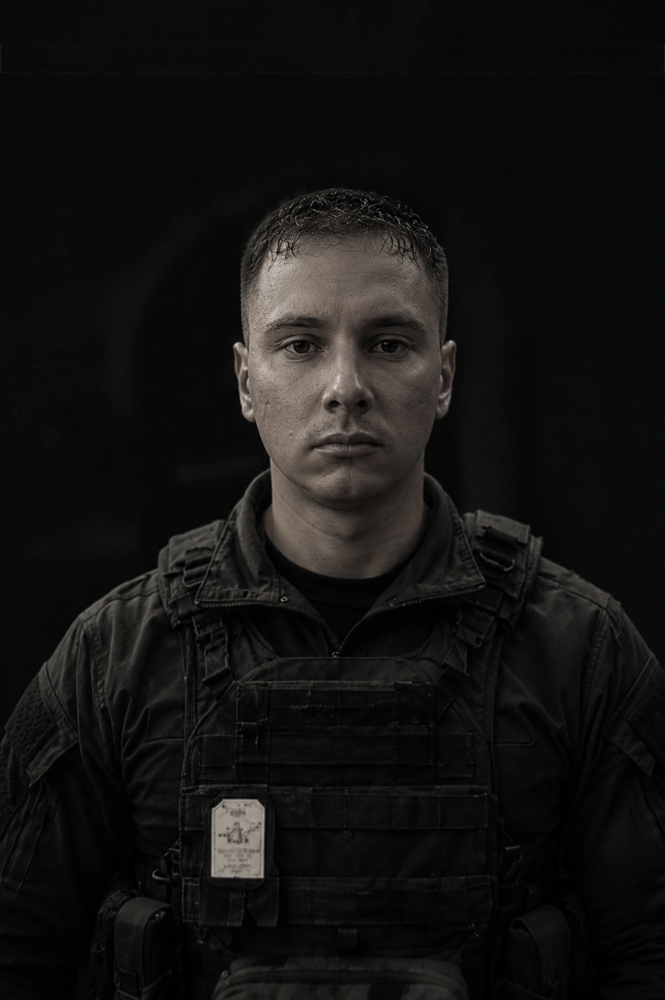
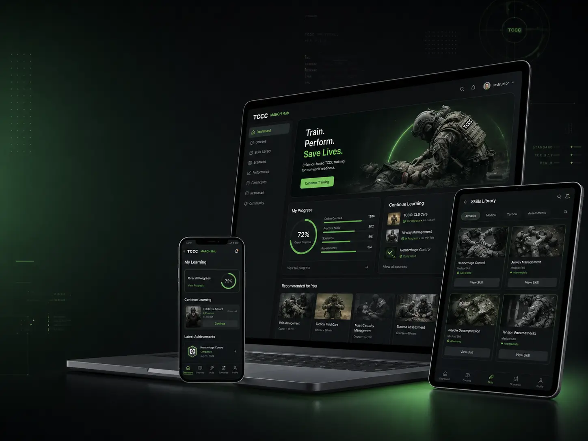
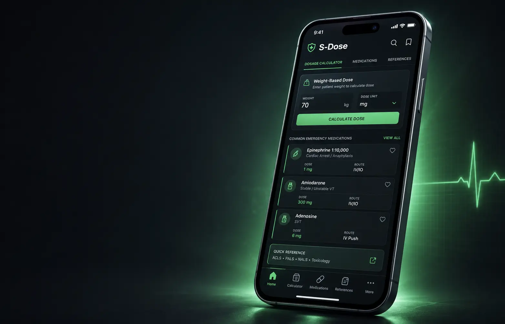
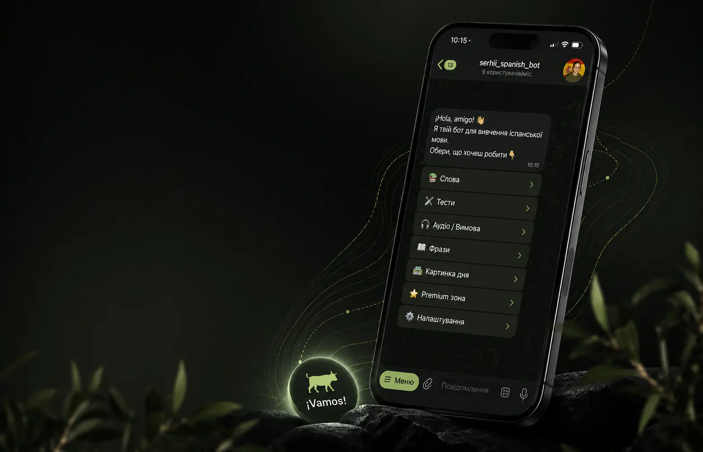

Після 30 вага раптом пішла вгору. Невже вся справа в метаболізмі?
Чи справді після 30 сповільнюється метаболізм? Як повсякденний рух, сон і харчування впливають на вагу та коли варто звернутися до лікаря.
Читати статтюПрактична медицина, підготовка людей і цифрові освітні проєкти для роботи у складних умовах.

Мій професійний напрям
Я військовий лікар. Займаюся медичним плануванням, організацією допомоги та евакуації. Цей практичний досвід визначає мій підхід до навчання військовослужбовців без медичної освіти та розробки інструментів для медицини й навчання.
Оцінка реальних спроможностей, організація медичної допомоги та планування евакуації.
Підготовка військовослужбовців без медичної освіти до надання допомоги з розумінням своїх завдань і меж підготовки.
Розробка S-Dose та інших цифрових інструментів для медичної практики й навчання.
Останні статті
Пояснюю механізми, розбираю оснащення та ділюся підходами до підготовки й надання допомоги.
Чи справді після 30 сповільнюється метаболізм? Як повсякденний рух, сон і харчування впливають на вагу та коли варто звернутися до лікаря.
Читати статтюКоли ефективної вентиляції через надгортанний пристрій достатньо, а коли потрібна інтубація: захист від аспірації, моніторинг, евакуація, можливості команди та межі доказів.
Читати статтюОбрані проєкти
Флагманський проєкт
Платформа з матеріалами, протоколами та інструментами для навчання тактичній медицині.
В розробці
Мобільний застосунок
Довідник і калькулятор доз лікарських засобів для практичного використання.
До проєкту
Telegram-бот
Українська, англійська, іспанська й німецька в Telegram: незалежні мовні налаштування, навчальні матеріали та персональна активність.
Дізнатися більше
Співпраця та контакти
Якщо у вас є ідея, проєкт або потреба в медичному чи освітньому рішенні — давайте обговоримо, як ми можемо працювати разом.